- 12 Aug, 2020
- 9 min read
INTRODUCTION
Problem
The main challenges currently facing the energy sector according to Deloitte [1] are related to three aspects: 1) generation, 2) distribution, and 3) consumption. The role of technology in these challenges plays a crucial role, as the digital transformation of utilities can improve the efficiency of power generation and electricity transmission and distribution while providing consumers with more capacity and choice in their energy use. In the same vein, General Electric states that the digitalization of energy consumption is critical along with demand management [2], for example, demand response programs are increasingly managed through digital solutions that help manage customer demand response and facilitate associated financial exchanges between utilities and their customers.
The main objective of this study is to forecast the energy consumption of 369 customers based on historical data from January to April 2014 using 3 algorithms with the AWS cloud service.
The main assumptions made are:
-
The overall average monthly energy consumption is similar.
-
There is a trend for customers to consume energy on an hourly and daily basis.
-
The forecast made is the average energy consumption of the last 7 days.
Interests
Electricity generating companies and/or utilities seeking to implement digital transformation strategies in energy demand management
DATA
Data Source
The electricityusagedata.zip dataset is the electrical energy consumption of each household taken from the UCI Machine Learning Repository in Irvine, CA: University of California. As mentioned above, the dates of the dataset are between 1/01/2014 and 29/04/2014, as for its structure it is important to mention that it has 3 variables: 1) time 2) consumption in kWh and 3) customer for a total of 1,047,576 input data.
Exploratory analysis
The average energy consumption in January was 526 kWh (see graph 1), with a decrease in February and March; however, in April it showed an upward trend, reaching an average of 552 kWh, this being the month when most energy was consumed.
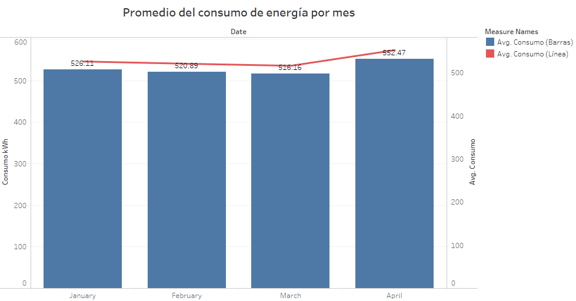
Graph 1
The average energy consumption per day has a similar trend in the months, for the month of January (see graph 2) the peak was located on day 3 with 556 kWh and the lowest consumption was on day 19 with 456 kWh.
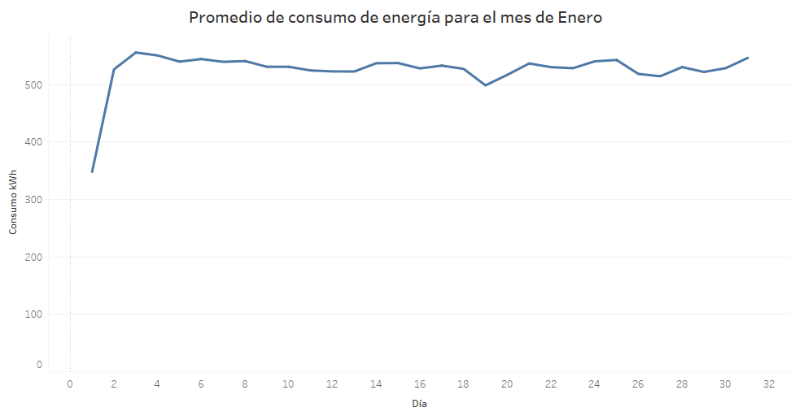
Graph2
In February (see Appendix 1), the day of highest consumption was the 4th with 546 kWh and 436 kWh, and the day of the lowest consumption was the 16th. However, in March (see appendix 2) the highest consumption was on the 15th with 536 kWh and at the end of the month, on the 30th, it showed the lowest consumption with 496 kWh. Finally, April (see Appendix 3) had its highest consumption on the 17th with 600 kWh, and three days later, that is, on April 20th it presented its lowest consumption with 501 kWh.
However, concerning the consumption of the days of the week, the months analyzed have maintained a similar trend in the increase in energy consumption from Thursday to Sunday (see graph 3).
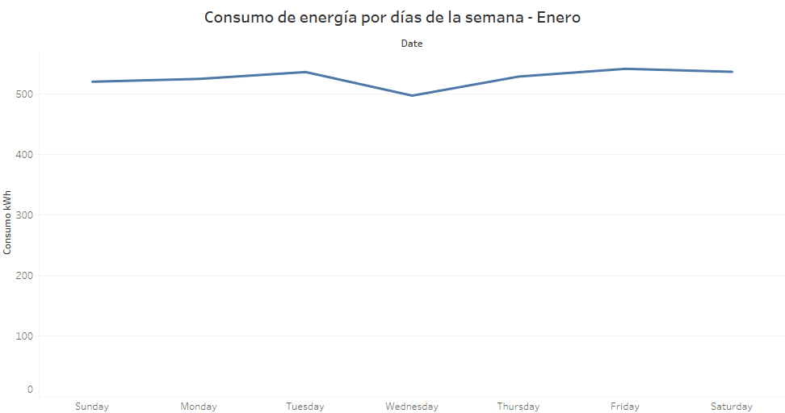
Graph 3
Graph 4 shows the behavior of energy consumption per hour. It should be noted that the same trend was maintained throughout the months, i.e. between 19:00 and 21:00, the highest consumption was recorded, with an average of 685 kWh. On the other hand, at 5:00 a.m. every month the lowest energy consumption is recorded, with an average of 300 kWh.
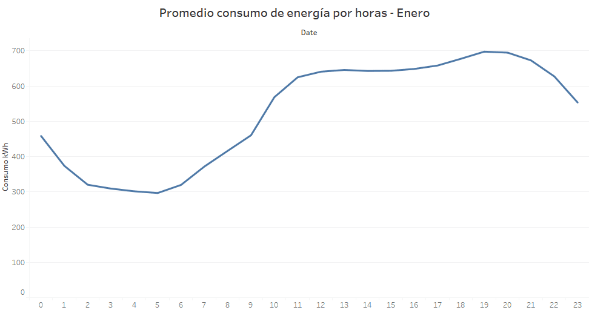
Graph 4
In the meantime, because the number of customers is large, for exploratory analysis, the customers who consume the most energy over the months will be taken into account on the condition that their consumption is equal to or greater than 5,000 kWh.
In graph 5, it can be seen that the customer with the id 361 presented greater energy consumption during the months analyzed, with April 13 being the day that generated a peak in its trend with 43,306 kWh. It is important to mention that the drop observed at the end of the graph is since on April 29th only 2 hours are recorded, because the data set ends on that day at 02:00, therefore, the forecast will be made for the following 36 hours.
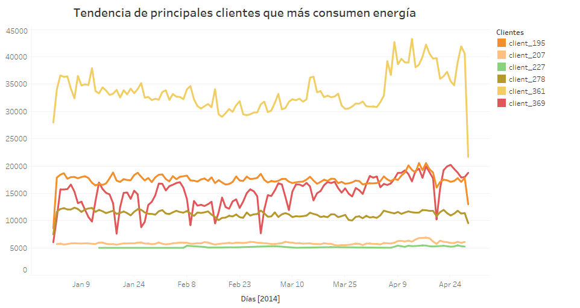
Graph 5
A stationary trend can be observed in the consumption behavior of these customers in the first 15 days (see graph 6) throughout all the months. For example, the customer with id 361 has the highest consumption between 22:00 and 02:00, the customer with id 195 has the highest consumption between 17:00 and 18:00.
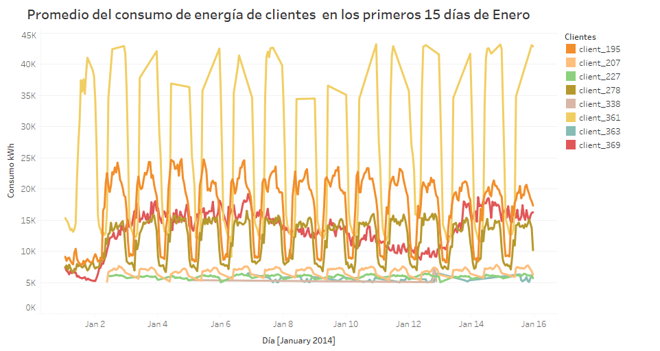
Graph 6
On the other hand, the client with id 278 its hourly trend is located in the range of 19:00 and 21:00. Finally, the client with the id 396 presents variations in his behavior with a schedule between 09:00 and 12:00, and the evening between 20:00 and 23:00. Also, these customers generally consume the most energy at the weekend.
METHODS
The method used to develop this study is Amazon Forecast which is a fully managed service that uses machine learning to create forecasts with a high level of accuracy (see graph 7). The forecast for this study was 36 hours with 3 quanta: 10, 50, and 90 respectively. The algorithms selected were DeepAR+, ETS, and Prophet.
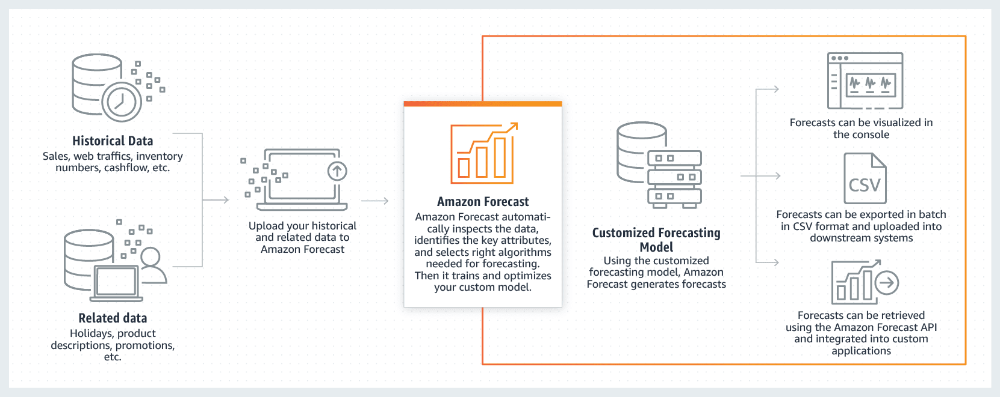
Graph 7
RESULTS
The forecast result of the algorithm that best fitted the 50 and 90 quantiles was DeepAR+ (see figure 8) concerning the other two algorithms (see appendix 4 and 5). Also, it was the one that was closest to the average for a week before the forecast, that is, the days between 21/04/2014 and 29/04/2014 (figure 9).
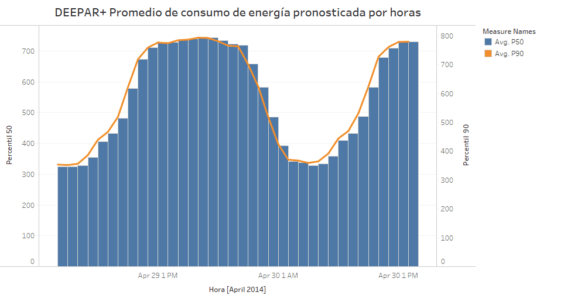
Graph 8
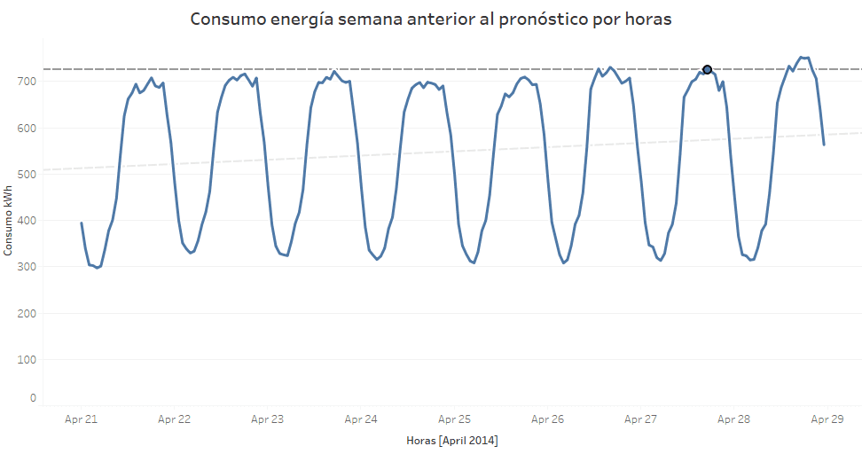
Graph 9
It can be observed that the behavior of energy consumption a week before the forecast maintains a stationary trend presenting a higher consumption in the hours between 17:00 and 21:00. The above is consistent with the forecast since the peak in average energy consumption is at 18:00 on 29/04/2014 with 792 kWh in the 90th quarter. After this time the consumption decreases until 04:00 on 30/04/2014 with 359 kWh, thus starting the consumption increase from 05:00.
Finally, with respect to the main customers specified in the exploratory analysis section, it can be concluded that for the customer with id 361 the peak of highest consumption on 04/29/2014 was at 21:00 with 64,582 kWh(see graph 10), however, this figure is exceeded the following day(04/30/2014) at 13:00 with 67,904 kWh which could indicate an increase in consumption for the last day of April.
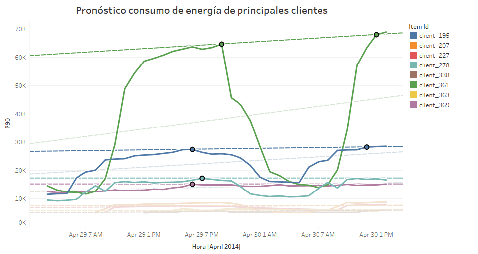
Graph 10
As can be seen, the behaviour of the other customers is similar, for example, for the customer with id 195 its highest consumption forecast for 29/04/2014 was at 18:00 with 27,376 kWh, however, this figure is exceeded on 30/04/2014 at 12:00 with 28,193 kWh. Customers with id 278 and 369 showed a linear trend in energy consumption.
CONCLUSIONS
In accordance with the hypotheses put forward in this study, it could be determined that the general average of the months analysed remains in a similar range (520 kWh - 550 kWh). Similarly, a similar trend was observed in the behaviour of energy consumption in the range of hours, days of the week and month. On the other hand, the average energy consumption of the last 7 days prior to the forecast is in line with the results obtained in the forecast. Finally, it is considered that the day 30/04/2014 will have a higher consumption than the previous day, this statement can also be reflected with the main customers mentioned in the exploratory analysis section.
RECOMMENDATIONS
For further studies, it is recommended to take into account a wider range of hours/days in the forecast while retaining the methodology of using several algorithms in order to find the one that best fits the data set with the 50 and 90 quantatiles respectively.
NOTES
The graphics have been published in a dashboard through Tableau Public. Also, if you want to see similar projects along with the source code you can go to my portfolio. Finally, contact me through LinkedIn or Twitter.
REFERENCES
[1]"Power Market Study 2030", Www2.deloitte.com, 2018. [Online]. Available: https://www2.deloitte.com/content/dam/Deloitte/de/Documents/energy-resources/Deloitte-Power-Market-Study-2030-EN.pdf. [Accessed: 02- Aug- 2020].
[2]"The Digital Energy Transformation", Ge.com, 2018. [Online]. Available: https://www.ge.com/content/dam/gepower-pw/global/en_US/documents/digitalization/The%20Digital%20Energy%20Transformation.pdf. [Accessed: 02- Aug- 2020].
APPENDIX
Appendix 1
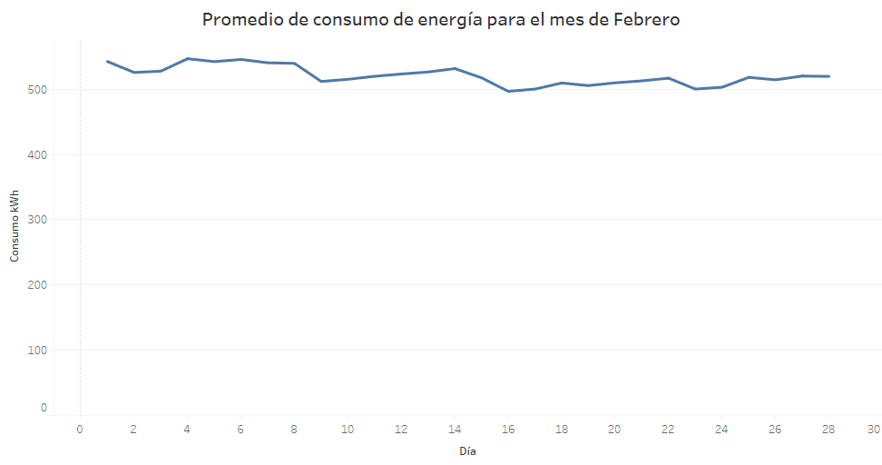
Appendix 2
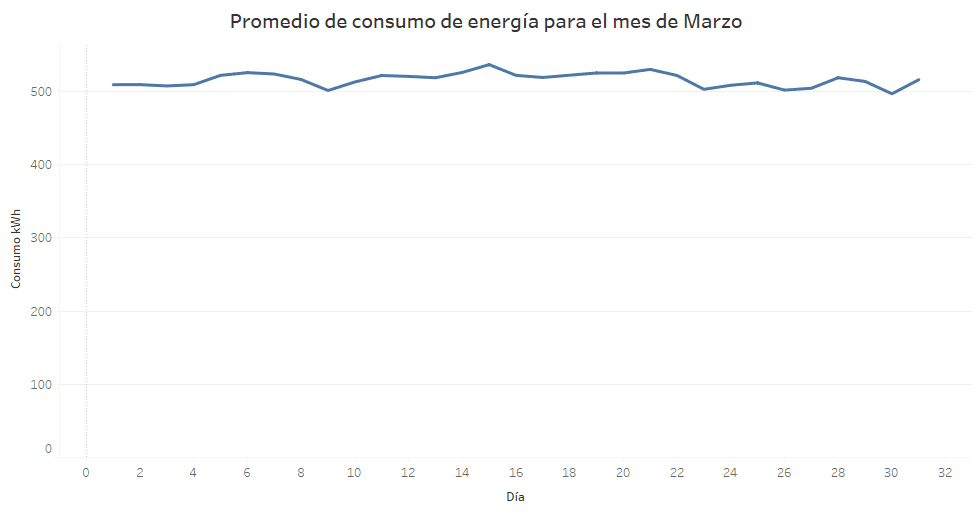
Appendix 3
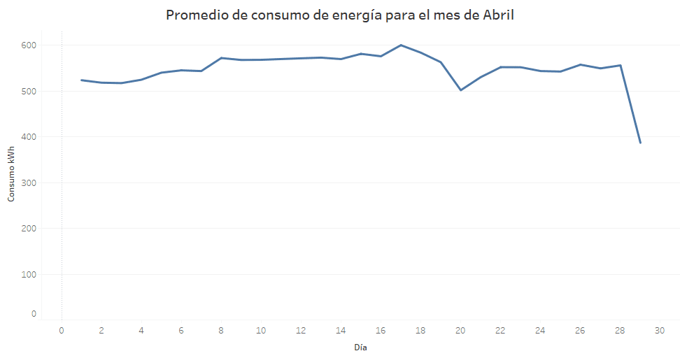
Appendix 4
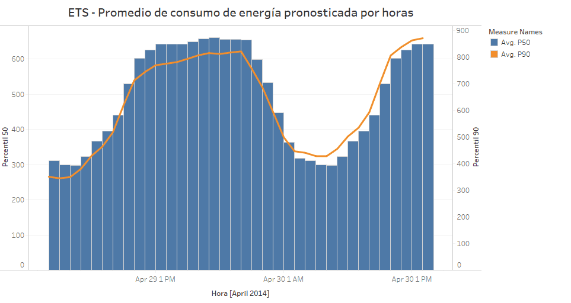
Appendix 5
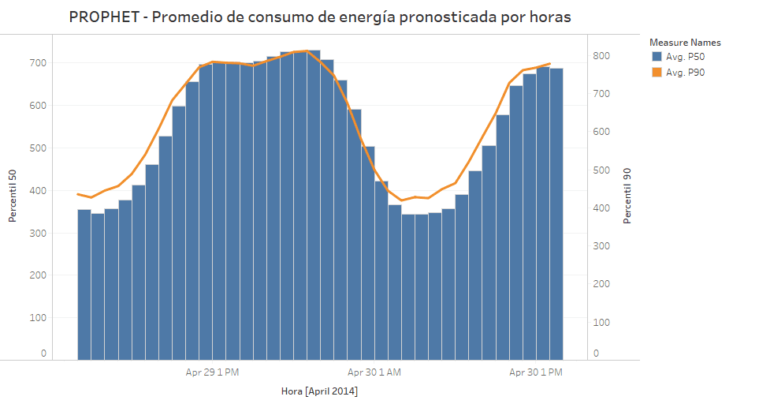